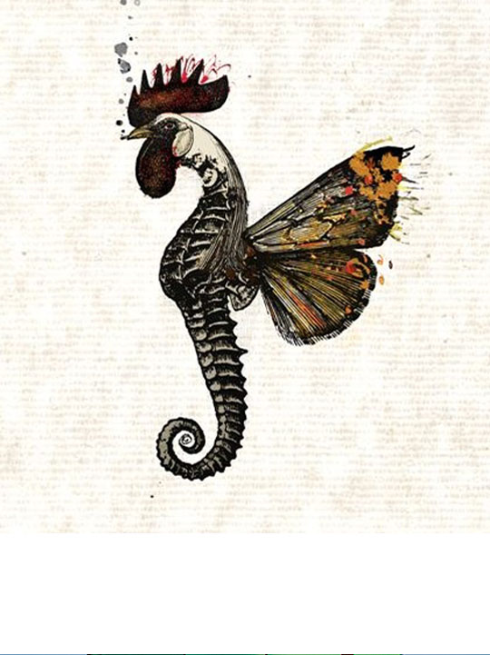
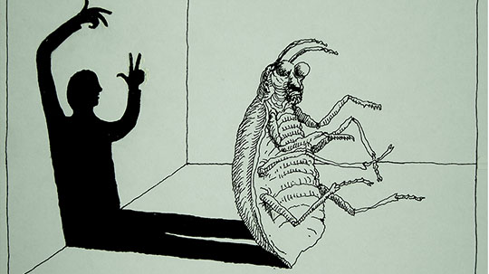
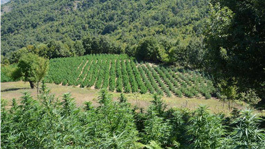

BUTAFORIA E RINISE SE PERPARIMIT DHE AMERIKANET
Si cdo gjë në këtë vend,që të ftillohen njerëzit, duhet që një fenomen të saturohet deri në atë pikë sa të të vijë për të vjellë ose duhet të...
lexo me shumeMINISTRI I QILARIT
Nje vend eshte mire nese ekonomia e tij eshte mire.Per tu shpjeguar studenteve teorine e hierarkise se nevojave sipas Maslow perdor shpesh nje shprehje e cila pa shume shkence e sintetizon gjenialitetin e atij zoterise."Nuk behet filozofi me barkun bosh!"- kjo eshte ajo fjali qe un e mendoj se e shpjegon me mire...
lexo me shume... 
PERROI PSIQIK
BUTAKET
DIXHITURA TE ZGJEDHURA
Kolonja ka lezet,edhe mbjelljen e ben me estetike.
ZGJIDHJA E DIFERENCES SE MADHE
Para se ti futesha profesionit te ekonomistit,shume vite me i ri,ne moshe kur ti quhesh i 'vogel' akoma,kisha nje problem me idene e te flaurit.Ketu nuk e kam per nje bluze,buke apo sheqer,e kam fjalen te falurit e parase. Nuk e kuptoja mekanizmin ekonomik qe ishte mbas atij procesi,por idene e te falurit para nuk e gelltisja dot Qe ta mbyll me pjesen e patetizmit,kur isha i vogel kisha si nje gjysem endrre,nje si mision.Vixioni im nese behesha 'shume' i pasur ishte jo te dhuroja para ose gjera,por te ndertoja shkolla,kopshte, e tu jepja njerezve nje mundesi.
lexo me shume...Ketu do te jete pika e takimit e asaj kategorie intelektualesh te cilet mendojne dhe besojne se nepermjet ballafaqimit te ideve,opinioneve dhe anali zave mund te perftohet nje sinteze qe do te sherbeje si themelel mbi te cilin do te mbeshtetet nje filozofi e re drejtuese.